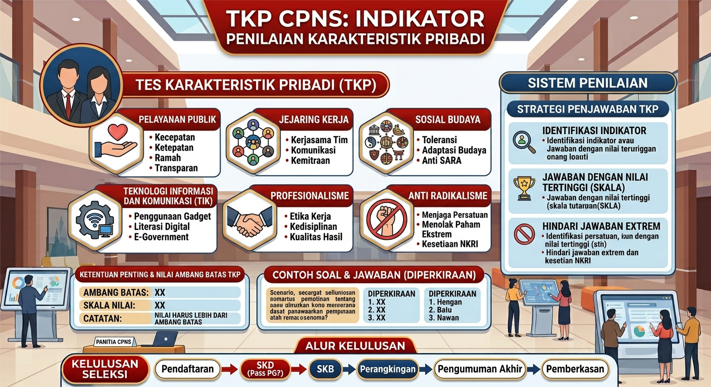

Halo pejuang NIP! Jika ada satu materi di dalam Tes Karakteristik Pribadi (TKP) yang paling "sensitif" namun krusial, jawabannya pasti Anti Radikalisme. Ditambahkan sebagai respon pemerintah untuk menyaring bibit-bibit ekstremisme di tubuh birokrasi, soal-soal ini sering kali menjebak. Jika kamu pernah membaca Rahasia Skor Maksimal TKP CPNS, kamu akan tahu bahwa BKN merancang soal ini untuk mengetes ketegasan moral dan kesetiaan mutlakmu pada negara.
Banyak peserta yang ragu dan akhirnya memilih opsi jawaban yang "abu-abu" alias mencari aman. Padahal, dalam urusan radikalisme, sikap kompromi adalah kelemahan fatal yang akan diganjar poin rendah. Mengkombinasikan ketangguhan mental dari materi Profesionalisme ASN dan kewaspadaan sosial, mari kita bedah tuntas cara nge-*hack* soal-soal ekstremisme agar kamu sukses mengamankan Poin 5 dengan percaya diri!
Apa yang Dicari BKN dari Materi Anti Radikalisme?
Di mata BKN, seorang ASN bukan hanya abdi masyarakat, tetapi juga Benteng Pertahanan Ideologi Pancasila. BKN mencari sosok yang sangat peka (memiliki insting deteksi dini), berani menolak segala bentuk intoleransi, tidak mudah termakan hoaks provokatif, dan punya nyali untuk melaporkan tindakan yang mengancam keutuhan NKRI.
Jangan samakan materi ini dengan Sosial Budaya. Jika Sosial Budaya menguji toleransimu terhadap perbedaan suku/agama, Anti Radikalisme justru menguji ketegasanmu dalam memberangus benih kekerasan dan anti-Pancasila.
3 Trik Emas Mendulang Poin 5 di Soal Anti Radikalisme
Saat membaca 5 opsi jawaban, pastikan kamu menggunakan filter berikut untuk langsung menembak jawaban paling tepat:
1. Deteksi Dini & Proaktif Melapor
BKN benci ASN yang menutup mata terhadap keanehan di sekitarnya.
Skenario: Kamu tidak sengaja mendengar percakapan beberapa rekan kerja di kantin yang merencanakan aksi penolakan terhadap ideologi negara dengan cara kekerasan.
Opsi Jebakan (Poin 2/3): Menjauhi mereka agar tidak ikut campur, atau menasihati mereka langsung di tempat (bisa memicu konflik bahaya).
Opsi Emas (Poin 5): Mengumpulkan bukti secara diam-diam, lalu segera melaporkannya kepada atasan atau pihak berwajib agar mendapat penanganan lebih lanjut. Ini adalah wujud nyata dari early warning system seorang ASN!
2. Filter Informasi: Jangan Jadi Agen Hoaks
Radikalisme di era modern paling sering menyebar lewat grup obrolan (WhatsApp, Telegram).
Skenario: Kamu menerima sebuah *broadcast message* yang menjelek-jelekkan pemerintahan dan mengajak orang-orang untuk melakukan kerusuhan.
Opsi Emas (Poin 5): Tidak membagikan pesan tersebut, mencari tahu kebenarannya dari sumber resmi, lalu memberikan edukasi kepada pengirim pesan bahwa informasi tersebut menyesatkan. Tindakan menghentikan rantai hoaks ini sangat sejalan dengan prinsip Melek Teknologi Informasi.
3. Ketegasan Menolak Tanpa Kompromi
Dalam soal ajakan bergabung dengan kelompok radikal, tidak ada kata kompromi.
Skenario: Sahabat lamamu mengajakmu untuk bergabung dalam sebuah kajian rahasia yang terindikasi anti-Pancasila.
Opsi Jebakan: Ikut sekali saja untuk menghargai pertemanan.
Opsi Emas (Poin 5): Menolak dengan sangat tegas saat itu juga, menjelaskan bahwa hal tersebut bertentangan dengan sumpah jabatan ASN, dan menjaga jarak dari kelompok tersebut. Ketegasan ini mirip dengan saat kita menolak uang suap di materi Integritas ASN.
Bedah Kasus: Menghadapi Rekan Kerja yang Terpapar
Mari kita uji refleks logikamu dengan skenario HOTS yang sangat dilematis:
"Rekan satu ruanganmu akhir-akhir ini sering memposting status di media sosial yang mengkafirkan agama lain dan memuja organisasi ekstremis terlarang. Sikapmu?"
- A. Melabraknya di depan banyak orang agar dia malu. (Poin 1 - Membawa emosi berlebihan dan merusak suasana kantor).
- B. Unfollow media sosialnya dan mendiamkannya. (Poin 3 - Pasif dan membiarkan masalah membesar).
- C. Mengajaknya berdiskusi secara persuasif saat jam istirahat, lalu melaporkan perubahan sikapnya kepada atasan atau bagian SDM secara rahasia agar ia segera mendapatkan pembinaan. (Poin 5).
Aturan Emas: Menjadi anti radikal bukan berarti memusuhi manusianya secara membabi buta, melainkan mencegah penyebaran "virus"-nya dengan pendekatan terstruktur dan sesuai hierarki kantor.
Tajamkan Insting "Intelijen"-mu Lewat Tryout!
Memahami teori deteksi dini dan ketegasan dari artikel ini memang terasa heroik di atas kertas. Namun, saat BKN menyuguhkan opsi-opsi yang sangat halus narasinya, instingmu bisa dengan mudah dikelabui jika tidak terbiasa berlatih. Jangan sampai kamu salah memilih antara sikap "toleran" dan sikap "membiarkan bibit ekstremisme tumbuh".
Oleh karena itu, segera asah *muscle memory* kamu dengan merutinkan *drill* soal. Terapkan jadwal latihan simulasi yang konsisten, persis seperti pedoman sakti yang kita ulas di Panduan Lengkap Latihan CAT CPNS 2026. Jadikan insting deteksi radikalisme ini sebagai tamengmu untuk menyapu bersih Poin 5, dan pastikan posisimu tak tergoyahkan di puncak perankingan SKD!
Berani Uji Ketegasan Mental Kamu Hari Ini?
Sudah paham kan bedanya toleransi dan ketegasan anti radikal? Jangan biarkan nyali ini memudar! Ayo, asah insting deteksi dinimu dan buktikan kamu layak menjadi benteng Pancasila lewat simulasi Tryout CAT TKP Mivida secara gratis sekarang juga!
Latihan Soal TKP Anti RadikalismeRekomendasi Bacaan TKP & TWK dari MiVida
Tanya Jawab Seputar Soal TKP Anti Radikalisme (FAQ)
Apa yang dicari BKN dari indikator Anti Radikalisme di TKP?
BKN mencari sosok ASN yang memiliki kesetiaan mutlak pada ideologi Pancasila. Mereka menginginkan kandidat yang punya kepekaan (deteksi dini) terhadap bibit-bibit ekstremisme, serta keberanian dan ketegasan untuk menolak sekaligus melaporkan hal-hal yang mengancam keutuhan NKRI.
Apa yang harus dijawab jika di soal kita diajak bergabung dengan grup yang terindikasi memusuhi pemerintah?
Jawaban yang paling sempurna (Poin 5) adalah: Menolak dengan sangat tegas saat itu juga, keluar dari grup atau pertemuan tersebut, lalu membentengi diri dengan edukasi kebangsaan, dan jika ada indikasi ancaman kekerasan, berani melaporkannya ke pihak berwajib.
Bagaimana jika ada rekan kerja yang mulai menunjukkan ciri-ciri terpapar paham radikal di kantor?
Tindakan dengan skor tertinggi bukanlah langsung melabrak atau memusuhinya secara terbuka. Tindakan Poin 5 adalah: Secara persuasif mengajaknya berdiskusi dari sudut pandang yang logis, lalu segera melaporkan perubahan sikapnya tersebut secara rahasia kepada atasan atau HRD agar ia segera mendapatkan pendampingan/pembinaan.